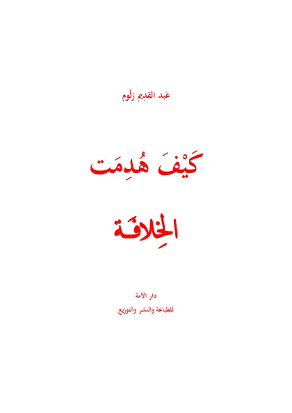

كيف هدمت الخلافة
Bagaimana Khilafah Dihancurkan
Baca Bagaimana Khilafah Dihancurkan (كيف هدمت الخلافة) karya Taqiyuddin an-Nabhani secara gratis di Maktabah Ilmu: teks Arab, Indonesia, Inggris (sebagian terjemah dibuat AI). Tanpa daftar, tanpa iklan.
Buka kitab iniLihat lemari ilmuDaftar isi
- Preface
- The struggle between · Islam and Kufr
- The conspiracies of the · European countries against the Islamic State
- Arousing the nationalist · chauvinism and the separatist tendencies
- The missionary and the · cultural invasions
- The attempt at introducing the Western · constitutional rules
- Adopting the Western laws (1)
- Adopting the Western laws (2)
- The impact of the cultural · and legislative invasion
- The AlliesÆ attempt at · enticing Jamal Pasha
- Mustafa Kemal works towards the withdrawal of · the State from the war and the signing of a peace · treaty with the Brit
- The capitulation of the · Ottoman State
- The British attempt to · destroy the Khilafah through political and legal · actions
- Britain backs the rebellion · of Mustafa Kemal
- The first phase in Mustafa KemalÆs rebellion
- Mustafa Kemal adopts · Ankara as his centre
- Mustafa KemalÆs return to · the rebellion through a · second phase
- The Ankara government · gets settled and other states deal with it directly
- Mustafa Kemal prepares · to settle the crisis with · Greece through war
- Separating the Sultanate · from the Khilafah
- The fatal blow (1)
- The fatal blow (2)
- Establishing the Khilafah and the rule by what Allah · has revealed is the vital · issue for the Muslims